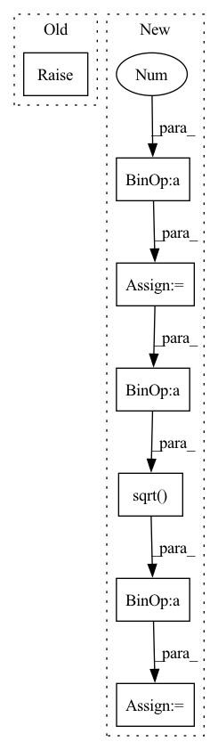

Pattern ID :20330
Before Change
Returns: values of Ven * psi
"""
raise NotImplementedError()
def nuclear_repulsion(self):
"""Compute the nuclear repulsion termAfter Change
p = torch.zeros(pos.shape[0], device=self.device)
for ielec in range(self.nelec):
istart = ielec * self.ndim
iend = (ielec + 1 ) * self.ndim
pelec = pos[:, istart:iend]
for iatom in range(self.natom):
patom = self.ao.atom_coords[iatom, :]
Z = self.ao.atomic_number[iatom]
r = torch.sqrt( ((pelec - patom)**2).sum(1)) // + 1E-12
p += -Z / r
return p.view(-1, 1)
def nuclear_repulsion(self):In pattern: SUPERPATTERN
Frequency: 3
Non-data size: 7
Instances Fragment ID: 66011823
Project Name: nlesc-jcer/qmctorch
Commit Name: adaaa1ed349fb72bbacad1c74788252742eddbf5
Time: 2020-05-25
Author: nicolas.gm.renaud@gmail.com
File Name: qmctorch/wavefunction/wf_base.py
M Class Name: WaveFunction
N Class Name: WaveFunction
M Method Name: nuclear_potential(2)
N Method Name: nuclear_potential(2)
M Parent Class: torch.nn.Module
N Parent Class: torch.nn.Module
M File Name: qmctorch/wavefunction/wf_base.py
N File Name: qmctorch/wavefunction/wf_base.py
M Start Line: 50
M End Line: 50
N Start Line: 72
N End Line: 82
Before Change
Returns: values of Ven * psi
"""
raise NotImplementedError()
def nuclear_repulsion(self):
"""Compute the nuclear repulsion termAfter Change
p = torch.zeros(pos.shape[0], device=self.device)
for ielec in range(self.nelec):
istart = ielec * self.ndim
iend = (ielec + 1 ) * self.ndim
pelec = pos[:, istart:iend]
for iatom in range(self.natom):
patom = self.ao.atom_coords[iatom, :]
Z = self.ao.atomic_number[iatom]
r = torch.sqrt( ((pelec - patom)** 2).sum(1)) // + 1E-12
p += -Z / r
return p.view(-1, 1)
def nuclear_repulsion(self): Fragment ID: 66011838
Project Name: nlesc-jcer/qmctorch
Commit Name: adaaa1ed349fb72bbacad1c74788252742eddbf5
Time: 2020-05-25
Author: nicolas.gm.renaud@gmail.com
File Name: qmctorch/wavefunction/wf_base.py
M Class Name: WaveFunction
N Class Name: WaveFunction
M Method Name: nuclear_potential(2)
N Method Name: nuclear_potential(2)
M Parent Class: torch.nn.Module
N Parent Class: torch.nn.Module
M File Name: qmctorch/wavefunction/wf_base.py
N File Name: qmctorch/wavefunction/wf_base.py
M Start Line: 50
M End Line: 50
N Start Line: 72
N End Line: 82
Before Change
Returns: values of Vee * psi
"""
raise NotImplementedError()
def nuclear_potential(self, pos):
"""Compute the potential of the wf pointsAfter Change
pot = torch.zeros(pos.shape[0], device=self.device)
for ielec1 in range(self.nelec - 1):
epos1 = pos[:, ielec1 *
self.ndim:(ielec1 + 1 ) * self.ndim]
for ielec2 in range(ielec1 + 1, self.nelec):
epos2 = pos[:, ielec2 *
self.ndim:(ielec2 + 1) * self.ndim]
r = torch.sqrt( ((epos1 - epos2)** 2).sum(1)) // + 1E-12
pot += (1. / r)
return pot.view(-1, 1)
def nuclear_potential(self, pos): Fragment ID: 66011833
Project Name: nlesc-jcer/qmctorch
Commit Name: adaaa1ed349fb72bbacad1c74788252742eddbf5
Time: 2020-05-25
Author: nicolas.gm.renaud@gmail.com
File Name: qmctorch/wavefunction/wf_base.py
M Class Name: WaveFunction
N Class Name: WaveFunction
M Method Name: electronic_potential(2)
N Method Name: electronic_potential(2)
M Parent Class: torch.nn.Module
N Parent Class: torch.nn.Module
M File Name: qmctorch/wavefunction/wf_base.py
N File Name: qmctorch/wavefunction/wf_base.py
M Start Line: 41
M End Line: 41
N Start Line: 47
N End Line: 57
Before Change
// cln: mean,var N x 1 x L
// gln: mean,var N x 1 x 1
if x.dim() != 3:
raise RuntimeError("{} accept 3D tensor as input".format(
self.__name__))
mean = torch.mean(x, (1, 2), keepdim=True)After Change
// gln: mean,var N x 1 x 1
if x.dim() == 4:
mean = torch.mean(x, (1, 2, 3), keepdim=True)
var = torch.mean((x-mean)**2 , (1, 2, 3), keepdim=True)
if self.elementwise_affine :
x = self.weight*(x-mean)/torch.sqrt(var+self.eps)+self.bias
else:
x = (x-mean)/ torch.sqrt( var+ self.eps)
if x.dim() == 3:
mean = torch.mean(x, (1, 2), keepdim=True)
var = torch.mean((x-mean)**2, (1, 2), keepdim=True)
if self.elementwise_affine: Fragment ID: 66011849
Project Name: jusperlee/dual-path-rnn-pytorch
Commit Name: 0d21970cc8123a03685bac7a12eb70d317098c31
Time: 2020-02-07
Author: Tsinghua.kaili@gmail.com
File Name: model/model_rnn.py
M Class Name: GlobalLayerNorm
N Class Name: GlobalLayerNorm
M Method Name: forward(2)
N Method Name: forward(2)
M Parent Class: nn.Module
N Parent Class: nn.Module
M File Name: model/model_rnn.py
N File Name: model/model_rnn.py
M Start Line: 43
M End Line: 53
N Start Line: 47
N End Line: 60